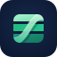

汇总账户
更新银行、券商、基金、房产和负债的月末价值。

WEALTH TRACKER资产价值追踪 使用说明LOCAL-FIRST ASSET JOURNAL
把分散在银行、券商与生活账户中的资产，整理成一份清晰、可追溯的月度账本。
账本保存在你的浏览器或本地 JSON 文件中，不上传到服务端。
不必逐笔记录琐碎消费。以月末资产、重要流水和价格变化为线索，持续理解家庭财富的去向。
A CALMER ROUTINE
更新银行、券商、基金、房产和负债的月末价值。
收入、支出、买卖、还款与资产收益自动联动余额。
用趋势和盈亏归因区分现金流、市场估值与其它贡献。
YOUR DATA, YOUR CONTROL
每个月都是独立快照。修改历史月份时，可选择同步后续月份；价格与人工估值依然保留在各自月份。
本地优先JSON 文件由你保存、导入和备份
多资产统一现金、股票、基金、固定资产与负债
月度可追溯流水、汇率、成本与估值变化共同解释结果
START WITH A REAL VIEW
先浏览完整的月度资产负债表、流水和趋势，再建立自己的账本。
查看样式账本